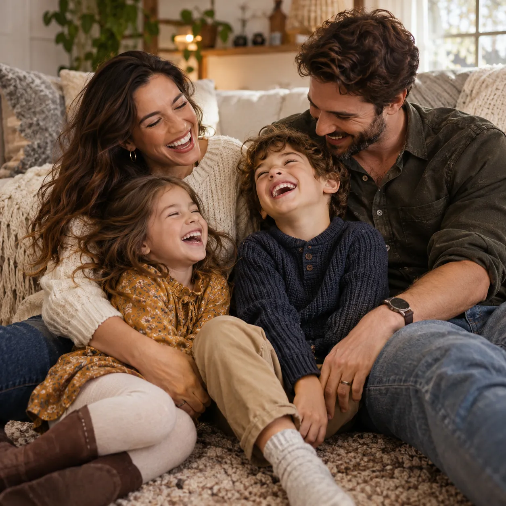
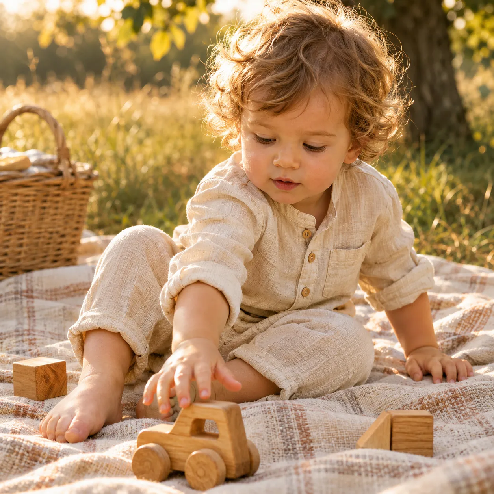

Sesiones infantiles
De los primeros meses a la primaria. Los chicos juegan, exploran y se ríen; yo voy detrás con la cámara.
- Al aire libre o en casa
- Hermanos juntos o de a uno
- Sin apuro: los tiempos los marcan ellos
Atrapando el tiempo
Fotos con luz natural y sin poses, para guardar cómo son hoy los chicos y la familia.
Lo que busco en cada foto
Vínculos, emociones y recuerdos: fotos que dentro de muchos años te devuelvan la risa, el abrazo y la luz de ese día.
Lo que se dicen sin palabras: miradas, manos que se buscan, abrazos.
La risa de verdad, la sorpresa, también el berrinche y la siesta.
Fotos para mirar hoy y para que los chicos las encuentren de grandes.
Trabajos
De los primeros meses a la primaria. Los chicos juegan, exploran y se ríen; yo voy detrás con la cámara.

Mamá, papá, hermanos y abuelos en la misma foto. Caminamos, nos sentamos en el pasto o leemos un cuento en el sillón de siempre.
También: fotos de Navidad, embarazo y eventos sociales, como bodas y quinceañeras.
Consultar por otra sesiónGalería
Tocá una foto para verla grande.
Imágenes ilustrativas de la demo
Ver más trabajos en Instagram
Quién soy
Soy Laura y hago fotos de chicos y familias en Granadero Baigorria y alrededores. Me gusta lo que pasa cuando nadie posa: la carcajada, el abrazo apretado, la mano que busca otra mano.
Por eso las sesiones son tranquilas, con luz natural y a su ritmo. Yo acompaño y voy guardando lo que pasa.
Atrapando el tiempo
Historias que contar
Fotos de la sesión y, junto a ellas, lo que cuenta cada familia.
Sesión de familia · al aire libre
Caminamos sin apuro, de la mano y a veces corriendo. Nadie posa: los chicos marcan el ritmo y la luz de la tarde hace el resto.
En palabras de la familia
Pronto, el relato de esta familia sobre su sesión.
Sesión infantil · al aire libre
Una montaña de hojas secas alcanza para jugar un buen rato. Mientras él se divierte, la cámara va guardando cada carcajada.
En palabras de la familia
Pronto, el relato de esta familia sobre su sesión.
Sesión de familia · con los abuelos
Un abrazo apretado entre generaciones, en el patio de la abuela. De esas fotos que con los años valen el doble.
En palabras de la familia
Pronto, el relato de esta familia sobre su sesión.
Contacto
Contame quiénes van a estar, dónde te gustaría hacerla y para cuándo. Te respondo por WhatsApp.